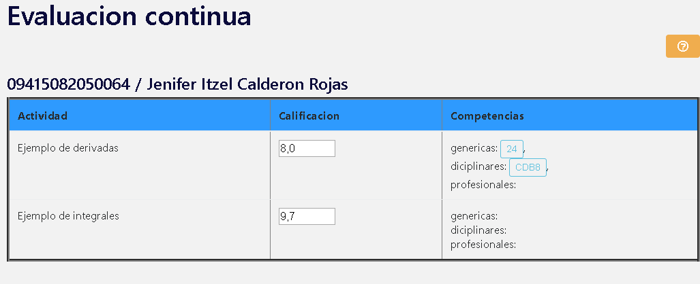

INDICE

Navegadores recomendados
- Google Chrome version de escritorio y version movil
- Mozilla Firefox version de escritorio y version movil
*Preferntemente use Chrome.
*En algunos navegadores la aplicacion podria no funcionar correctamente.

Pagina de inicio
1.- Imagen de perfil: Puede cambiarse en la pagina de ajustes.
2.- Inicio: Enlace a la pagina de inicio.
3.- Menu de competencias: Son los enlaces para ir a la pagina para ver y seleccionar competencias para un curso (una pagina para cada tipo de competencia, generica, disciplinar y profesional).
4.- Registrar actividad: Enlace a un formulario para registrar una actividad para un curso.
5.- Registrar curso: Enlace a un formlario para registrar un nuevo curso.
6.- Clave y nombre del profesor: Muestra la clave y nombre del profesor que inicio sesion.
7.- Ajustes y cerrar sesion: El boton azul es un enlace a una pagina que le permitira cambiar la imagen de perfil, la contraseña y datos. El boton rojo es para cerrar session.
8.- Cursos: En esta seccion se muestran los cursos que han sido creados, en caso de no haber cursos creados, se mostrara un enlace al formulario para crear uno. En caso de que haya creado un curso anteriormente, se mostraran como en la siguiente imagen.
Cada curso se visualiza en un cuadro que lleva el nombre de la asignatura, el grupo al que se imparte, y cuatro botones.
El boton ver actividades lo redirige a una pagina donde podra visualizar todas las actividades que ha creado para ese curso.
Los botones Parcial (1, 2, 3) lo redirigen a una pagina donde mostraran la lista de alumnos junto con los criterios de evaluacion, las competencias seleccionadas y otras opciones.
Al hacer clic en cualquiera de los botones anteriores, el curso se considera como seleccionado y en el menu aparecera una opcion que contendra "nombre de la materia/grupo/parcial". es importante tener en cuenta el numero de parcial (1,2 o 3) ya que al elegir sus competencias estas se asignaran al parcial seleccionado.
Ver actividades
En esta pagina se muestran las actividades de cada parcial que han sido creadas, existe la opcion de borrarla si asi lo requiere, pero no hay forma de recuperarla.
Examen, tutoria, orientacion y extra son criterios de evaluacion predeterminados y no pueden ser borradas.
Al final de la pagina hay un boton para borrar el curso, al presionalo eliminara las actividades, calificaciones y competencias que haya creado o seleccionado (no se puede restaurar una vez borrado).
Parciales

1.- Opcion en menu: Al hacer clic en algun boton de los cursos( ver actividades, parcial 1, parcial 2, parcial 3) aparecera en el menu una nueva opcion que le inndica que ese curso ha sido seleccionado, el numero que esta al final indica el parcial 1, 2, o 3, al dar clic en esta opcion lo redirige a la pagina de evaluacion de parcial.
2.- Criterios de evaluacion: Aqui se asigna una calificacion a los criterios de evaluacion los cuales tienen un valor porcentual en la calificacion final.
Examen 20%
tutoria 10%
orientacion 10%
extra 10%
evaluacion continua 60%
extra es un campo opcional y puede ser usado o no.
Para modificar la calificacion haga clic sobre la casilla que contiene la calificacion, escriba el numero o bien ayudese con las flechas que aparecen para subir y bajar la cantidad y por ultimo mientras el puntero siga en la casilla presione enter para guardar, la pagina recargara y mostrara la nueva calificacion (Solo se guarda una calificacion a la vez).

La escala es de 0 a 10 y el calculo del porcentaje se realizara automaticamente
| ejemplo de calificaciones en examen | |
| calificacion | puntos en calificacion final |
| 10 | 2 |
| 9 | 1.8 |
| 8 | 1.6 |
| ejemplo de calificaciones en extra, orientacion y tutoria | |
| calificacion | puntos en calificacion final |
| 10 | 1 |
| 9 | 0.9 |
| 8 | 0.8 |
3.- Evaluacion continua vale el 60 porciento de la calificacion final y es el promedio de las calificaciones obtenidas de las actividades. Con el boton verde ingresa a la pagina de calificaciones de actividades de cada alumno.ir a evaluacion de actividades
4.- Calificacion final Muestra la calificacion final y el dictamen
mas de nueve--excelente
de 8 a 8.9----muy bien
de 7 a 7.9----bien
de 6 a 6.9----regular
menor de 6----insuficiente
Competencias: abajo de la tabla de evaluacion estan todas las competencias que se han seleccionado previamente para este curso y parcial
Resumen de evaluacion de competencias: al final hay tres botones que sirven para mostrar el reporte de evalacion de competencias (un reporte por cada tipo de competencia, genericas, disciplinar, profesional), el cual podra ser impreso o guardado en formato pdf. Para imprimir o guardar haga clic derecho en calquier lugar de la pagina y seleccione la opcion "imprimir...".
Evaluacion de actividades

1.- Informacion del alumno: Se muestran la matricula y nombre del alumno seleccionado.
2.- Nombre de la actividad: Se muestra el nombre de la actividad.
3.- Calificacion: Espacio para asignar la calificacion, esta se asigna de la misma manera que en la ventana de evaluacion de parcial.
4.- Competencias: Son las competencias que se le asignaron a la actividad al momento de crearl, al darle clic se mostrara la descripcion de la competencia.
En caso de que la actividad no tenga competencias asignadas se vera de la siguiente manera.

Competencias genericas
Hay 11 competencias genericas distribuidas en 6 categorias, en esta seccion se muestra una tabla por competencia con el fin de que seleccione los atributos que desse integrar a su curso seleccionado
| Competencias | Categoria |
| 1.- Participa con una conciencia cívica y ética en la vida de su comunidad, región, México y el mundo 2.- Mantiene una actitud respetuosa hacia la interculturalidad y la diversidad de creencias, valores, ideas y prácticas sociales 3.- Contribuye al desarrollo sustentable de manera crítica, con acciones responsables |
participa con responsabilidad en la sociedad |
| 4.- Participa y colabora de manera efectiva en equipos diversos | trabaja en forma colaborativa |
| 5.- Aprende por iniciativa e interés propio a lo largo de la vida | aprende de forma autonoma |
| 6.- Sustenta una postura personal sobre temas de interés y relevancia general, considerando otros puntos de vista de manera crítica y reflexiva 7.- Desarrolla innovaciones y propone soluciones a problemas a partir de métodos establecidos |
piensa critica y reflexivamente |
| 8.- Escucha, interpreta y emite mensajes pertinentes en distintos contextos mediante la utilización de medios, códigos y herramientas apropiados | se expresa y comunica |
| 9.- Elige y practica estilos de vida saludables 10.- Es sensible al arte y participa en la apreciación e interpretación de sus expresiones 11.- Se conoce y valora a sí mismo y aborda problemas y retos teniendo en cuenta los objetivos que persigue |
se autodetermina y cuida de si |
Para agregar un atributo debe hacer clic sobre el boton verde que esta delante de la descripcion del atributo que desee agregar, entonces aparecera otro boton rojo, que sirve para removerlo del curso, los atributos que tengan los dos botones son los que estan agregados al curso en el parcial que ha seleccionado (el parcial seleccionado lo puede visualizar en la opcion debajo de inicio en el menu).
Las competencias que selecciona son agregados a un solo parcial, el que tiene seleccionado.
Competencias disciplinares
Las competencias disciplinares se seleccionan de la misma forma que las genericas, dar clic en el boton verde para agregar y en el rojo para quitar.
El recuadro blanco que aparece arriba de la tabla de competencias es un filtro que hace que se muestren las competencias que tengan coincidencias con las palabras o letras que escriba. Por ejemplo: si pone la palabra "construye", la tabla mostrara solo las competencias que contengan la palabra.
Competencias profesionales
Competencias profesionales cuenta con un formulario para registrar nuevas competencias profesionales las cuales apareeran en la tabla que esta debajo
La clave solo puede ser de 6 caracteres y la descripcion de 300 caracteres.
La tabla y el cuadro de busqueda funciona exactamente igual que en la pagina de competencias disciplinares.
Registrar actividad
En esta pagina encontrará un formulario donde deberá escribir primeramente una descripción o nombre de la actividad de 100 caracteres máximo. Después seleccione la fecha de entrega y marque el numero de parcial donde estará la actividad.
Después de lo anterior tiene la opción de vincular la actividad que esta por crear con algunas competencias. Si desea agregar una competencia genérica puede dar clic en cualquiera de los tres primeros botones y saldrá una ventana emergente como la siguiente.
Deberá dar un clic en el botón buscar y podrá ver las competencias que están vinculadas al curso.
Después de clic en uno de los botones verdes para agregar la competencia. Y será agregada al formulario
Para cambiar la competencia seleccionada repita la acción, pero seleccionando una competencia diferente. Puede seleccionar tres competencias genéricas, dos disciplinares y dos profesionales. Si desea que no se registre la competencia presione el botón rojo, la casilla se marcara de otro color lo que indica que no se tomara en cuenta.
Por último de clic en el botón registrar para guardar la actividad.
Registrar curso
En enta pagina tendra un formulario donde tendra una lista de materias y una de grupos

Seleccione el grupo y materia que impartira y de clic en el boton "Registrar"
Despues espere un momento, esta accion podria tardar un poco, no cierre la pagina ni la recarge, la pagina le avisara cuando este completado el registro.